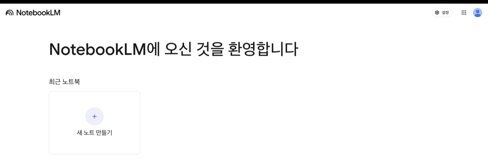
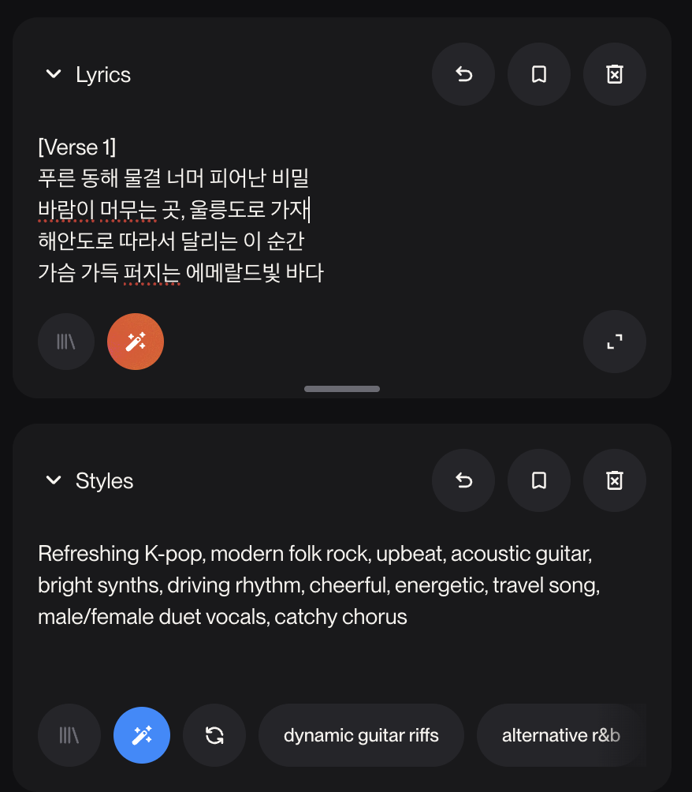

AI로 관광 홍보
콘텐츠 직접 만들기
AI 이해부터 글·번역·리서치·웹페이지 제작까지
AI를 “신기한 도구”로만 보는 데서 멈추지 않고, 내 가게·숙소·체험·관광지를 소개하는 실제 결과물로 연결합니다. 화면의 순서대로 따라 하면 홍보 문구, 다국어 안내, FAQ, 웹페이지 초안이 남습니다.

AI로 만들 수 있는 홍보 웹페이지를 먼저 봅니다
아래 예시는 AI로 만든 울릉도 관광 소개 페이지입니다. 중요한 것은 디자인 자체가 아니라, 내 정보 → AI 초안 → 검증 → 웹페이지로 이어지는 제작 방식입니다. 휴대폰에서도 읽기 쉬운지 함께 확인해 보세요.
주제는 하나만
식당·숙소·체험·관광지·특산품 중 하나를 정합니다. 주제가 좁을수록 AI 답변이 구체적이고 쓸 만해집니다.
재료를 먼저 만듭니다
소개문, 외국어 안내, FAQ, 사실 확인 목록을 따로 만든 뒤 웹페이지로 조립합니다. 한 번에 다 시키지 않는 것이 핵심입니다.
검증하고 공개합니다
AI가 만든 문장은 초안입니다. 가격·운영시간·배편·주소·사진 권리는 사람이 확인해야 공개할 수 있습니다.
flowchart LR
A["✍️ 홍보 문구"] --> Z
B["🌐 다국어 안내"] --> Z
C["🔎 리서치 자료"] --> Z
D["✅ 사실 확인"] --> Z
Z{{"Codex로 웹페이지 조립"}} --> DONE(["🎉 홍보 웹페이지 완성"])
AI에게 큰 일을 한 번에 맡기기보다, 작은 결과물을 순서대로 만들고 마지막에 조립합니다.
AI는 대신 생각해 주는 사람이 아니라, 초안을 만드는 도구입니다
원리를 깊게 몰라도 쓸 수는 있습니다. 하지만 “무엇을 잘하고, 어디서 틀릴 수 있는지”를 알아야 실무에 안전하게 쓸 수 있습니다.
AI는 아주 많은 글과 정보를 미리 학습해 두었다가, 우리가 부탁하면 글·번역·이미지·요약을 만들어 주는 프로그램입니다.
쉽게 비유하면
책을 아주 많이 읽은 신입 직원과 같습니다. 빠르게 초안을 만들지만, 현장 사정·가격·운영시간·배편처럼 바뀌는 정보는 모를 수 있습니다.
생성형 AI란
글·이미지·번역·음성·웹페이지처럼 새 결과물을 만들어 주는 AI입니다. 이 자료에서는 홍보 문구, 외국어 안내, FAQ, 웹페이지 초안을 만드는 데 씁니다.
1. 내가 쓴 말을 읽습니다
2. 배운 패턴을 바탕으로 초안을 만듭니다
3. 내가 준 정보가 많을수록 구체적입니다
4. 마지막 확인은 사람이 합니다
| 구분 | AI가 잘하는 일 | 사람이 확인할 일 |
|---|---|---|
| 글쓰기 | 소개문, SNS 글, 제목 후보, FAQ 초안 | 과장 표현, 실제와 다른 표현, 지역 정서 |
| 번역 | 영어·일본어·중국어 초안, 쉬운 표현 변환 | 음식 설명, 알레르기, 예약·결제 표현 |
| 조사 | 관광객 질문 예상, 키워드, 비교표 | 최신 가격, 배편, 운영시간, 공식 공지 |
| 디자인 | 페이지 구조, 버튼 문구, 색상 제안 | 모바일 화면, 사진 품질, 문의 버튼 작동 |
| 코딩 | HTML 초안, CSS 수정, 반응형 개선 | 브라우저에서 실제로 열리는지, 링크가 맞는지 |
AI는 더 이상 “챗봇에 한 번 물어보는 도구”에 머물지 않습니다. 2026년에는 글·이미지·음성·영상·코딩·검색·업무 자동화가 한 화면에서 연결되고 있습니다. 아래 흐름을 이해하면, 관광 홍보 콘텐츠 제작도 훨씬 선명해집니다.

생성형 AI가 빠르게 대중화됨
Stanford HAI 2026 AI Index는 생성형 AI가 대중 시장에 나온 뒤 3년 만에 약 53% 수준의 인구 단위 채택에 도달했다고 정리합니다. 이제 AI는 일부 전문가만 쓰는 도구가 아니라, 손님·경쟁 업체·플랫폼 모두가 쓰는 일상 도구가 되고 있습니다.

텍스트만이 아니라 사진·음성·영상까지 다룸
최신 AI는 글만 읽는 것이 아니라 사진, 메뉴판 이미지, 지도, 음성, 영상까지 함께 이해하고 만들 수 있습니다. 이것을 멀티모달 AI라고 부릅니다.

검색이 “링크 목록”에서 “답변형 검색”으로 바뀜
관광객은 이제 “울릉도 맛집”만 검색하지 않습니다. “부모님과 가기 좋은 울릉도 2박3일 코스”, “비 오는 날 갈 만한 곳”처럼 질문형으로 묻고, AI가 바로 정리한 답을 기대합니다.

에이전트 AI: 여러 단계를 이어서 처리
McKinsey의 2025 State of AI는 AI 사용이 넓어지고, 특히 agentic AI가 확산되고 있지만 많은 조직은 아직 실험에서 실제 업무 적용으로 넘어가는 중이라고 설명합니다. 에이전트 AI는 조사, 정리, 작성, 수정 같은 여러 단계를 이어서 처리합니다.

코딩을 몰라도 웹페이지와 도구를 만들 수 있음
AI 코딩 도구는 HTML, CSS, JavaScript 같은 코드를 사람이 직접 쓰지 않아도 만들어 줍니다. 중요한 능력은 코딩 문법보다 원하는 결과를 정확히 설명하고, 결과를 확인하고, 다시 고치는 힘입니다.

개인화 콘텐츠가 쉬워짐
같은 장소라도 가족 여행객, 외국인, 등산객, 당일치기 여행객, 어르신 동반 여행객에게 필요한 정보가 다릅니다. AI는 같은 정보를 대상별 문장으로 바꾸는 데 강합니다.

업무 도구 안에 AI가 기본으로 들어감
문서 작성, 검색, 디자인, 예약 응대, 고객 관리, 코딩 도구 안에 AI 기능이 들어가고 있습니다. 따로 AI 앱을 열지 않아도 일하던 화면에서 바로 도움을 받는 방향입니다.

책임 있는 사용이 더 중요해짐
AI가 빠르게 퍼질수록 틀린 정보, 저작권, 개인정보, 과장 광고, 편향 표현도 함께 문제가 됩니다. Stanford HAI도 AI 능력은 빠르게 발전하지만 이를 측정하고 관리하는 체계는 따라가기 어렵다고 지적합니다.
| AI 동향 | 관광 홍보에서 생기는 변화 | 이 자료에서 해볼 실습 |
|---|---|---|
| 생성형 AI 대중화 | 작은 가게도 직접 홍보 콘텐츠를 만들 수 있음 | 소개문, SNS 글, 제목 후보 만들기 |
| 멀티모달 AI | 사진·메뉴판·지도·음성을 콘텐츠 재료로 활용 | 사진 설명, 음식 설명, 음성 소개 예시 보기 |
| 답변형 검색 | 관광객 질문에 답하는 페이지가 중요해짐 | FAQ, 방문 전 질문, 리서치 표 만들기 |
| 에이전트 AI | 조사→정리→작성→번역→제작 흐름을 이어서 처리 | STEP 6에서 여러 작업을 순서대로 시키기 |
| AI 코딩 | 비전공자도 웹페이지 초안을 만들 수 있음 | Codex로 index.html 홍보 페이지 만들기 |
| 개인화 | 고객 유형별 안내문을 쉽게 만들 수 있음 | 가족/외국인/등산객용 문구 변형하기 |
| AI 거버넌스 | 공개 전 사실·권리·개인정보 확인이 필수 | 구성/사실/외국어/권리 점검표 작성 |
아래 사례는 실제 업무 흐름에 바로 붙일 수 있는 사용 방식입니다. 중요한 것은 “AI에게 한 번 물어보기”가 아니라, 작은 일을 순서대로 맡기는 것입니다.
손님 질문을 미리 예상
“주차되나요?”, “배편 시간에 맞춰 식사할 수 있나요?”, “외국인도 주문하기 쉬운가요?” 같은 질문을 AI에게 뽑게 한 뒤 FAQ로 정리합니다.
내 말을 홍보 문구로 바꾸기
“도동항에서 가깝고 가족이 운영해요” 같은 평범한 설명을 제목, 한 줄 소개, SNS 문장으로 바꿉니다.
외국인이 이해하는 설명 만들기
“따개비밥”, “오징어내장탕”처럼 번역만으로 부족한 말은 재료·맛·먹는 방법·알레르기까지 풀어 설명합니다.
긴 자료를 요약하고 다시 쓰기
관광 안내문, 체험 설명, 안전 수칙을 넣고 초보자용, 외국인용, 어린이 동반 가족용으로 다시 쓰게 할 수 있습니다.
웹페이지 구조 잡기
첫 화면, 소개 카드, 방문 안내, FAQ, 문의 버튼처럼 방문자가 읽는 순서로 페이지 구성을 제안받습니다.
관광 현장에서 AI는 이런 작은 일부터 도와줍니다
AI 활용은 거창한 자동화가 아니라, 반복되는 작은 업무를 빠르게 초안으로 만드는 것에서 시작합니다. 아래 예시는 식당·숙소·체험·관광지·특산품 홍보에 바로 적용할 수 있습니다.
🖋️관광 홍보 문구
- 한 줄 소개·계절별·대상별 카피
- 성인봉·행남해안산책로·봉래폭포 소개
- 포스터·현수막·카드뉴스 문안
📱SNS 홍보 콘텐츠
- 인스타 글·블로그 후기·릴스 대본
- 해시태그 묶음·카카오톡 홍보
- 축제·이벤트·체험 모집글
🌐다국어 안내문
- 영어·일본어·중국어 안내문
- 음식을 외국인이 이해하게 풀어 설명
- 외국인 FAQ·지도 영문 소개
🍽️메뉴판·숙소·체험 안내
- 한·영·일 메뉴판, 알레르기 안내
- 숙소 소개·객실·예약 안내문
- 체험 소요시간·준비물·난이도 정리
🗺️코스 추천 · FAQ · 응대
- 당일·1박2일·2박3일·가족·우천 코스
- 배편·날씨·예약·결제 FAQ
- 예약·취소·후기 요청 응대 메시지
💻홍보 웹페이지
- 관광지·식당·숙소·체험 소개 페이지
- 예약 문의 폼·다국어·오시는 길
- 말로 설명 → 브라우저에서 열리는 페이지

도구는 많지만, 역할로 고르면 됩니다
처음부터 여러 도구를 모두 익힐 필요는 없습니다. 글·번역·조사는 대화형 AI, 웹페이지 제작은 코딩 도구, 자료 요약은 노트형 도구처럼 일의 종류에 맞춰 고르면 됩니다.


✨Gemini 글·조사·번역
검색 기반 조사·번역·이미지 아이디어에 강점. 관광 소개글, 다국어 안내, 키워드 조사에 쓰기 좋습니다.
- 관광 소개글·SNS·다국어 안내
- 관광 키워드·경쟁 지역 조사
- 이미지 생성용 프롬프트
💬ChatGPT 가장 범용적인 AI 비서
글쓰기·요약·번역·아이디어 정리까지 두루. Gemini와 함께 홍보글·FAQ·응대 문구에 좋습니다.
- 홍보 문구·블로그·SNS 글
- 관광객 FAQ·고객 응대 메시지
- 파일·이미지 읽고 정리
📝Claude 긴 글·자료 정리에 강함
해설자료·체험 소개문·웹페이지 원고처럼 길고 체계적인 결과물에 강합니다.
- 체험 프로그램 소개문·해설 스크립트
- 긴 자료 요약·정리
- 웹페이지 문안 정리
🧑💻Codex 웹페이지 제작
코딩을 몰라도 웹페이지 제작·수정을 도와줍니다. 말로 요청하면 HTML과 CSS를 만들어 줍니다.
- HTML 웹페이지 초안·수정
- 버튼 색·FAQ·모바일 반응형
- 말로 설명하면 코드로 제작
🎧NotebookLM 자료 요약·음성
자료를 넣으면 요약·질문답변·오디오 설명으로 바꿔 줍니다. 관광 해설이나 안내 멘트 연습에 유용합니다.
- 관광 해설·교육자료 요약
- 질문답변 만들기
- 오디오 요약으로 설명 연습
🎵Suno 짧은 홍보 노래
SNS 영상·매장 안내에 쓸 짧은 홍보 노래를 만듭니다. (STEP 4)
- 여행 분위기 배경음악
- 가사 있는 홍보송
- 영상·매장 안내용 BGM
| 도구 | 초보자 추천 | 주로 쓰는 일 | 울릉도 관광 활용 |
|---|---|---|---|
| Gemini | 높음 | 검색·조사·번역·이미지 아이디어 | 관광 키워드, 외국인 안내문, 홍보 문구 |
| ChatGPT | 매우 높음 | 글쓰기·요약·번역·아이디어 | SNS 글, FAQ, 고객 응대, 소개문 |
| Claude | 높음 | 긴 문서·해설자료·페이지 원고 | 체험 소개, 해설 스크립트, 페이지 원고 |
| Codex | 중간 | 웹페이지·코드 제작 | 홍보 웹페이지 만들기·수정 |
| NotebookLM | 높음 | 자료 요약·오디오 설명 | 관광 해설·교육자료 요약 |
https://chatgpt.com/
좋은 결과는 질문 한 번이 아니라, 작은 단계의 반복에서 나옵니다
처음부터 “웹페이지 만들어줘”라고만 하면 결과가 얕아지기 쉽습니다. 아래 순서대로 재료를 만들고 확인한 뒤 조립하면, AI를 잘 모르는 사람도 결과물을 안정적으로 만들 수 있습니다.
flowchart LR A(["1. 내 정보 정리"]) --> B(["2. AI에게 초안 요청"]) B --> C(["3. 마음에 드는 문장 저장"]) C --> D(["4. 질문·FAQ로 보강"]) D --> E(["5. 외국어 안내 만들기"]) E --> F(["6. 사실 확인"]) F --> G(["7. 웹페이지 제작"])
좋은 요청문 만들기
역할·대상·조건을 넣어 AI가 바로 쓸 수 있는 답을 하게 만듭니다.
내 작업장에 정보 모으기
이름, 위치, 장점, AI가 만든 문장, 확인할 항목을 한곳에 모읍니다.
소개문과 제목 만들기
한 줄 소개, SNS 글, 페이지 제목 후보를 만듭니다.
외국어 안내 만들기
영어 안내, 음식 설명, 알레르기·예약 문구를 만듭니다.
관광객 질문과 사실 확인
FAQ, 검색 키워드, 확인이 필요한 정보를 표로 정리합니다.
웹페이지로 조립하기
작업장에 모아 둔 재료를 Codex에 넣어 HTML 페이지를 만듭니다.
공개 전 확인하기
모바일 화면, 문의 버튼, 지도, 운영 정보, 사진 권리를 확인합니다.
AI 답변 품질은 요청문이 결정합니다
AI는 내가 준 정보 안에서 움직입니다. 역할, 대상, 상황, 원하는 형식을 넣으면 답이 훨씬 구체적이고 바로 쓸 수 있게 바뀝니다.
https://gemini.google.com/
‘프롬프트’는 AI에게 주는 부탁 문장입니다. 좋은 부탁에는 이 세 가지가 들어갑니다.
🙁 아쉬운 부탁
→ 누구를 위해, 무엇을, 어떤 톤인지 없어 두루뭉술한 답이 나옵니다.
🙂 좋은 부탁
[맥락] 처음 오는 가족 여행객에게 보여줄 거야.
[구체적 지시] 성인봉·오징어 요리를 넣어 300자로, 해시태그 10개와 함께 만들어줘.
아래를 복사해 Gemini에 붙여넣어 보세요. 역할을 주면 답이 얼마나 달라지는지 체험합니다.
너는 울릉도 관광 홍보 전문가야.
울릉도를 처음 방문하는 가족 여행객에게
매력을 전달하는 한 줄 소개 문구를 10개 만들어줘.
감성적이고 짧게, 과장 없이 작성해줘.여기 적어두면, 다음 STEP의 “내 정보 넣어서 복사” 버튼이 프롬프트를 자동으로 완성해 줍니다. 모르는 칸은 비워도 됩니다.
AI 답변에서 쓸 문장만 골라 여기에 모읍니다
AI 답변 전체를 다 쓸 필요는 없습니다. 마음에 드는 제목, 소개문, FAQ, 외국어 안내, 확인할 사실만 골라 붙여 두세요. 새로고침해도 이 브라우저에 저장됩니다.
AI에 붙여넣기
각 실습의 복사 버튼을 눌러 AI에 붙여넣고 답변을 받습니다. 답이 길면 “핵심만 3줄로 줄여줘”라고 다시 요청합니다.
작업장에 붙여두기
AI 답변 중 실제로 쓸 문장만 아래 칸에 붙여 둡니다. 마지막 웹페이지 제작 때 이 작업장 내용을 한꺼번에 사용합니다.
복사해서 [대괄호]만 바꾸면 됩니다
막막할 땐 여기서 꺼내 쓰세요. 위 입력칸을 채우고 “채워서 복사”를 누르면, 대괄호가 내 정보로 바뀐 완성 프롬프트가 복사됩니다. (비운 칸은 대괄호 그대로 남습니다.)
너는 [역할]이야.
[대상]에게 보여줄 [만들 것]을 만들어줘.
[꼭 넣을 내용]
- [키워드1, 키워드2, 키워드3]
[조건]
- 분위기/톤: [따뜻하게 / 활기차게 등]
- 길이/형식: [300자 이내 / 표로 / 목록으로]
- 언어: [한국어 / 영어 / 일본어]
- 확인이 필요한 가격·시간·배편은 "확인 필요"로 표시너는 울릉도 맛집 홍보 전문가야.
[식당 이름]의 인스타그램 홍보글을 만들어줘.
대표 메뉴는 [메뉴]이고, 위치는 [위치]야.
따뜻하고 먹음직스럽게, 300자 이내, 해시태그 10개 포함.너는 울릉도 여행 안내 전문가야.
[숙소 이름]을 가족 여행객에게 소개하는 글을 만들어줘.
특징은 [바다 전망 / 주방 완비 등], 주변에 [관광지]가 있어.
따뜻하고 친근하게, 예약 안내 문구도 함께.너는 생태관광 체험 기획자야.
[체험 이름] 소개문을 만들어줘.
소요 시간·난이도·준비물·추천 계절·예약 안내를 포함하고,
안전 안내도 넣어줘. 가격은 "확인 필요"로 표시.외국인 관광객을 위한 [가게 이름] 안내문을 만들어줘.
영어와 일본어 각 3줄, 쉬운 표현으로.
대표 메뉴 [메뉴]는 재료·맛·특징을 함께 설명하고,
예약·결제·알레르기 정보를 분명하게.예약 문의 고객에게 보내는 친절한 카카오톡 답변을 만들어줘.
위치는 [위치], 예약 방법은 [방법]이야.
정중하고 따뜻하게, 3~4문장으로.답이 너무 길 때
핵심만 3줄로 줄여줘.
초보자도 바로 이해할 수 있게 쉬운 표현으로 다시 써줘.말이 과장됐을 때
실제로 확인한 정보만 남기고 과장 표현을 줄여줘.
가격·시간·배편처럼 확인이 필요한 내용은 "확인 필요"로 표시해줘.번역이 어색할 때
외국인 관광객이 이해하기 쉬운 자연스러운 표현으로 고쳐줘.
음식 이름은 그대로 번역하지 말고 재료와 맛을 함께 설명해줘.웹페이지가 깨졌을 때
휴대폰 화면에서 글자와 버튼이 겹치지 않게 CSS를 고쳐줘.
버튼은 누르기 쉽게 크고, 사진은 화면 밖으로 넘치지 않게 해줘.웹페이지에 들어갈 글 재료를 만듭니다
여기서 나온 제목·한 줄 소개·SNS 글은 STEP 7에서 웹페이지에 그대로 씁니다.

소개글·SNS·FAQ 한 번에
너는 울릉도 관광 홍보 전문가야.
아래 정보로 우리 가게 홍보자료를 만들어줘.
[내 정보]
- 이름: [가게/숙소/프로그램 이름]
- 종류: [식당/숙소/체험/관광지/특산품]
- 위치: [위치]
- 대표 메뉴/서비스: [대표 메뉴·객실·체험]
- 장점: [강조하고 싶은 특징]
- 문의: [전화번호 또는 문의 방법]
[만들어줄 것]
1. 큰 제목 5개
2. 한 줄 소개 5개
3. 인스타그램 글 1개 (해시태그 10개 포함)
4. 자주 묻는 질문 5개와 답변
조건: 중학생도 이해하게 쉽게 / 과장 없이 /
가격·시간·배편은 "확인 필요"로 표시#울릉도맛집 #도동항 #따개비밥 #오징어내장탕 #울릉도여행
2-2블로그 글 제목 뽑기
울릉도 [내 주제]로 관광객이 검색할 만한
블로그 글 제목 10개를 만들어줘.
검색에 잘 걸릴 키워드를 넣고, 클릭하고 싶게 작성해줘.2-3릴스·쇼츠 15초 대본
[내 주제]를 소개하는 15초 릴스 대본을 만들어줘.
장면별로 나누고, 화면 자막과 배경 설명을 함께 적어줘.2-4계절별 홍보 문구
[내 주제]의 봄·여름·가을·겨울 계절별 홍보 문구를
각 2개씩 만들어줘. 짧고 감성적으로, 과장 없이.
외국인도 이해하는 다국어 안내 만들기
울릉도는 외국인 관광객도 늘고 있습니다. 영어·일본어 안내와, 문화가 달라도 헷갈리지 않는 쉬운 표현을 만들어 둡니다.

영어·일본어 안내문 + 음식 설명
우리 가게를 처음 방문하는 외국인 관광객을 위한
영어와 일본어 안내문을 만들어줘.
[내 정보]
- 이름 / 종류 / 위치 / 대표 메뉴 / 문의
[만들어줄 것]
1. 영어 안내 3줄 (짧고 쉬운 문장)
2. 일본어 안내 3줄
3. 대표 메뉴를 외국인이 이해하게 재료·맛과 함께 설명
4. 외국인이 자주 묻는 질문 3개와 답 (영어)
조건: 쉬운 표현 / 예약·결제·알레르기 분명하게 / 정중하게Signature dishes: barnacle rice & squid soup with fresh local catch.
Ocean-view seats available — reservation recommended (card payment OK).
3-2외국인 FAQ (영어)
외국인 관광객이 자주 묻는 질문 5개와 답을 영어로 만들어줘.
배편·결제·예약·주차·와이파이를 포함하고, 쉬운 문장으로.3-3다국어 메뉴판
내 메뉴 [메뉴 목록]을 한국어·영어·일본어 메뉴판으로 만들어줘.
각 메뉴에 한 줄 설명과 알레르기 안내를 넣어줘.3-4생태관광 주의 안내 (한·영)
생태관광 방문객을 위한 자연 보호·안전·계절 주의 안내를
한국어와 영어로 각 4줄씩 만들어줘. 정중하고 쉬운 표현으로.글을 넘어 음성·음악으로도 알립니다
자료를 넣으면 대화형 음성 소개가 되고, 짧은 홍보 노래도 만들 수 있습니다. 아래는 실제로 만든 예시입니다 — 직접 재생해 보세요.
내 자료가 팟캐스트 소개로
🗒️ 이 음성의 대본 보기 (해울림식당 · 약 30초)

울릉도 홍보 노래
Gemini로 스타일·가사를 받아 Suno에 붙여넣으면 짧은 홍보 노래가 만들어집니다.
🎼 이 노래의 가사 대본 보기 — 즐거운 여행, 울릉도로 떠나요!



AI로 조사하고 내 주제를 단단하게
글만 만드는 게 아닙니다. AI에게 조사를 시키면 관광객이 궁금해할 것, 검색 키워드, 다른 지역 사례, 그리고 내가 확인해야 할 사실 목록까지 뽑아 줍니다.

후속 질문으로 파고들기
표로 정리해 달라고 하기
국내 / 외국인 나눠서 요청
다른 지역과 비교시키기
‘확인 필요’를 꼭 표시시키기
관광객 관점 + 사실 확인 목록
울릉도 [내 주제] 홍보 웹페이지를 만들려고 해.
아래를 표로 정리해줘.
1. 관광객이 방문 전에 가장 궁금해하는 것 7가지
2. 사람들이 많이 쓰는 검색 키워드 10개 (국내/외국인 나눠서)
3. 다른 인기 관광지 소개 페이지에서 배울 점 3가지
4. 내가 반드시 사실 확인해야 할 항목
(가격·운영시간·배편·전화·주소 등)
확실하지 않은 정보는 "확인 필요"로 표시하고,
과장 없이 사실 위주로 정리해줘.| 항목 | AI가 정리한 내용 | 비고 |
|---|---|---|
| 궁금해하는 것 | 배편 시간·결항 여부, 주차, 아이 동반, 예약 방법, 영어 안내 여부 | — |
| 검색 키워드 (국내) | 울릉도 맛집 · 도동항 회 · 성인봉 등산 · 울릉도 2박3일 | — |
| 검색 키워드 (외국인) | Ulleungdo food · Ulleungdo ferry · things to do in Ulleungdo | — |
| 다른 지역에서 배울 점 | 제주: 코스별 카드 / 강릉: 사진 중심 / 거제: 예약 버튼 상단 고정 | — |
| 사실 확인 항목 | 가격 · 운영시간 · 배편 시각 · 전화번호 · 주소 | 확인 필요 |

5-2경쟁 지역 벤치마킹
제주·강릉·거제의 [내 주제] 홍보 방식을 비교하고,
울릉도가 배울 점 5가지를 표로 정리해줘.5-3관광객 질문 모으기
[내 주제] 방문객이 방문 전에 가장 많이 묻는 질문 15개를
카테고리(교통·예약·비용·준비물·날씨)별로 묶어줘.5-4콘텐츠 아이디어 뽑기
위 조사 결과를 바탕으로, 이번 시즌에 올리면 좋을
SNS 콘텐츠 아이디어 10개를 이유와 함께 제안해줘.여러 작업을 순서대로 이어서 시키기
지금까지는 하나씩 물었습니다. 이번엔 큰 목표를 주고 할 일을 번호로 나눠 한 번에 이어서 시켜봅니다.
물어보면 만들어 줍니다
내가 하나 물으면, 하나를 만들어 줍니다.
여러 단계를 이어서 처리합니다
목표만 주면 여러 일을 순서대로 스스로 해냅니다.
아래 다섯 단계를 한 대화에서 이어서 시켜보세요.
조사
울릉도 관광객이 검색할 만한 키워드 20개를 추천해줘.
국내 관광객과 외국인 관광객을 나누어 정리해줘.정리
위 키워드를 바탕으로 울릉도 관광 홍보에서
강조해야 할 포인트 5가지를 정리해줘.콘텐츠 만들기
위 포인트를 바탕으로 인스타그램 게시글 3개와
블로그 제목 5개를 만들어줘.번역
위 게시글 중 1개를 영어와 일본어로 자연스럽게 번역해줘.웹페이지 구성
지금까지 만든 내용을 바탕으로 울릉도 생태관광 홍보
웹페이지 구조를 만들어줘. 첫 화면, 프로그램 소개,
추천 코스, FAQ, 예약 문의 섹션을 포함해줘.
이제 웹페이지를 직접 만듭니다 (Codex)
작업장에 모은 글·번역·FAQ·리서치를 Codex에게 전달해 웹페이지로 조립합니다. 코딩을 몰라도 됩니다. 원하는 화면을 말로 설명하면 Codex가 코드를 대신 만들어 줍니다.
웹페이지 만들기 프롬프트
울릉도 [내 주제] 홍보 웹페이지를 만들어줘.
- 한 파일(index.html), 서버 없이 브라우저에서 열리게
- 모바일에서도 글자·버튼이 겹치지 않게
[기본 정보] 이름/종류/위치/대표 메뉴·서비스/장점/문의/한 줄 소개
[페이지 구성]
1. 히어로: 큰 제목, 한 줄 소개, 대표 이미지, 문의 버튼
2. 코스/이용 안내 카드 3개
3. 대표 음식·체험 소개 3~5개
4. 외국인 안내 3줄
5. 자주 묻는 질문 5개
6. 오시는 길(지도 링크 버튼)과 문의
[디자인] 울릉도 바다색 + 레드오렌지 포인트, 큰 글씨, 모바일 우선
[주의] 미확인 가격·배편·운영시간은 "확인 필요"로 표시수정 프롬프트
방금 만든 웹페이지에서
- 제목을 더 크게
- 문의 버튼을 레드오렌지(#EA580C)로, 항상 잘 보이게
- 대표 음식 카드에 사진 자리를 추가
- 휴대폰 화면에서 글자가 겹치지 않게
다른 내용은 그대로 두고 이 부분만 고쳐줘.여유가 있으면 색상·문구를 계속 다듬어 보세요. “다른 색으로 3개 보여줘”처럼요.
완성하면 이런 모습이 됩니다
데스크톱과 휴대폰 모두에서 자연스럽게 보이는지 확인합니다.
이 항목이 다 있으면 완성입니다
하나씩 눌러 확인하세요. 체크 상태는 이 브라우저에 저장됩니다.
구성 점검
사실 점검
외국어 점검
권리 점검
바로 공개 가능
사실 확인이 끝났고, 모바일 화면이 정상이며, 문의/지도 버튼이 작동합니다.
조금 보완
문구나 사진은 좋지만 운영시간, 가격, 지도, 외국어 표현 중 일부 확인이 남았습니다.
아직 연습
정보가 부족하거나 문의 버튼, 지도, 모바일 확인이 빠져 있습니다. 작업장으로 돌아가 빈칸을 채우세요.
완성한 웹페이지를 휴대폰에서 열리는 링크로 만듭니다
내 컴퓨터에서만 보이는 파일은 아직 홍보 페이지가 아닙니다. GitHub Pages에 올리고 URL을 만든 뒤, 휴대폰에서 열어보면 공유 준비가 끝납니다.

GitHub에 로그인
github.com에 로그인합니다. 계정이 없다면 새로 만듭니다.
새 저장소 만들기
New repository를 누르고 이름을 정합니다. 예: haeullim-page. Public으로 둡니다.
파일 올리기
Codex가 만든 index.html과 이미지 파일을 업로드합니다. 첫 파일 이름은 반드시 index.html이어야 합니다.
Pages 켜기
Settings → Pages → Branch를 main으로 선택하고 Save를 누릅니다.
URL 확인
잠시 뒤 나온 주소를 열어봅니다. 휴대폰에서 열리면 성공입니다. 열리지 않으면 파일 이름과 Pages 설정을 다시 확인합니다.
네이버 QR 코드 생성기 열기
PC에서 qr.naver.com에 접속하고 네이버 계정으로 로그인합니다. 상단 또는 첫 화면의 코드 생성을 누릅니다.
디자인 고르기
기본형 또는 스킨형 중 하나를 고릅니다. 처음이면 기본형을 추천합니다. 제목은 예: 해울림식당 홍보 페이지처럼 나중에 알아보기 쉽게 적습니다.
URL 링크 유형 선택
페이지 유형에서 URL 링크를 선택하고, GitHub Pages에서 만든 내 웹페이지 주소를 붙여넣습니다.
저장하고 다운로드
저장 버튼을 눌러 QR을 만든 뒤 이미지 파일로 저장합니다. 포스터, 메뉴판, 명함, 안내문에 넣을 수 있습니다.
휴대폰으로 스캔 테스트
카메라 앱으로 QR을 찍어 내 홍보 웹페이지가 바로 열리는지 확인합니다. 안 열리면 URL이 https://로 시작하는지, GitHub Pages가 공개 상태인지 확인합니다.
이제 직접 만들고 다시 고칠 수 있습니다
울릉도 생태관광 홍보 웹페이지를 처음부터 끝까지 스스로 완성하는 흐름을 익혔습니다. AI는 거들었을 뿐, 콘텐츠의 주인은 여러분입니다. 같은 순서를 내 가게·숙소·체험·관광지에 반복해서 적용할 수 있습니다.